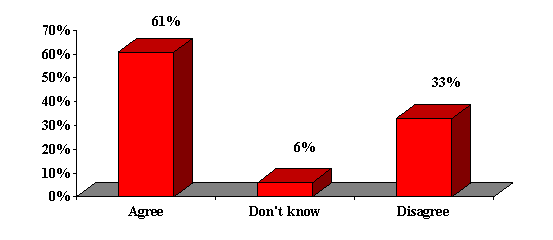
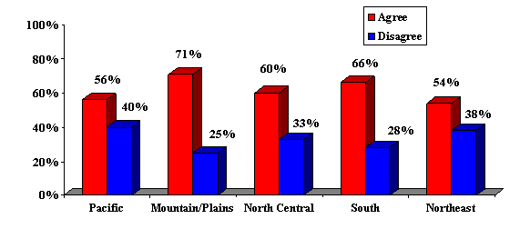

{kind=link}

|
Center
for the Defense of Free Enterprise |
|
HOME ISSUES OPPOSITION PROJECTS DEFENDERS WISE USE BOOKSTORE ARCHIVE |
Poll Update: December 19, 2003
Most Americans Believe Environmental Groups are Too Extreme
Results of our November 2003 national voter survey show a solid majority of American voters are of the opinion that environmental groups are too extreme. Specifically, 61% of voters nationwide agree with the statement; While protecting the environment is important, environmental groups usually push for solutions which are too extreme for me. Just 33% disagree with this, and 6% have no opinion.
As would be expected, there are major partisan differences in opinion on this issue. While Republicans widely agree environmental groups are usually too extreme (80% agree), we also find a majority of Independents share this sentiment (52% agree/36% disagree). There is a further split among Democrats we find a majority of Democrat men agree with the idea that environmental groups are too extreme, while Democrat women disagree in majority numbers. Similarly, self-described Conservatives and Moderates agree environmental groups are too extreme, but Liberal voters widely disagree.
Regionally, there is majority agreement throughout the country that environmental groups are usually too extreme; however, voters in the Pacific region (CA, OR, WA, HI and AK) and Northeast are less likely to share this sentiment than voters elsewhere in the country. Agreement is highest among voters in the Mountain and Plains states.
Voter Attitudes About Environmental Groups
Do you agree or disagree with the following statement?
While protecting the environment is important, environmental groups usually push for solutions which are too extreme for me.

Partisan Attitudes About Environmental Groups
Regional Attitudes About Environmental Groups

Moore Information provides insight to clients spanning a wide spectrum of businesses and organizations in areas such as market research, brand recognition, advertising tracking, corporate image, customer satisfaction, industry and political issues. For information: www.moore-info.com or phone (503) 221-3100 or (800) 498-5154.
*The survey was conducted November 10-13, 2003 among a representative sample of 800 voters nationwide. Sampling error is +/- 3% at the 95% confidence level.
RETURN TO CENTER FOR THE DEFENSE OF FREE ENTERPRISE HOME PAGE